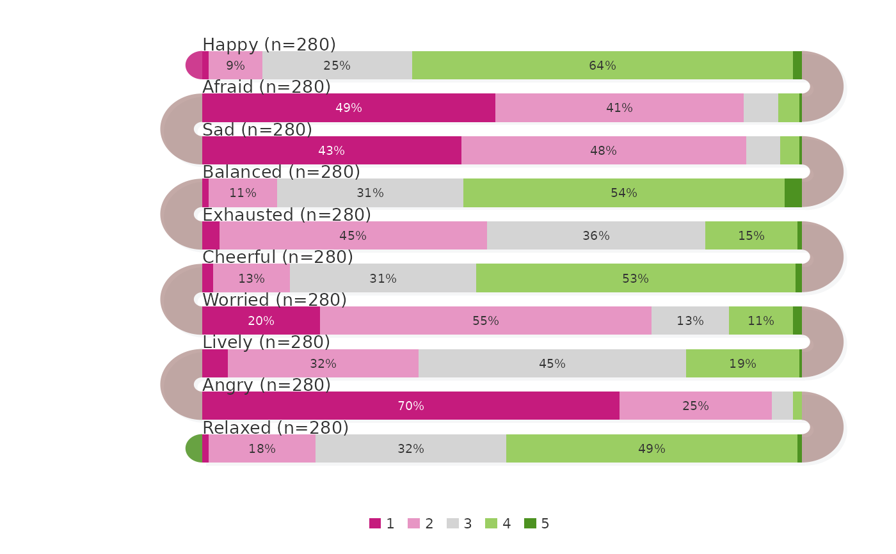

snake_palette() returns one of the palettes in snake_palettes,
interpolated to n colors. The survey plots match colors to response
levels by position and use only the first length(levels) colors, so n
should equal the number of response levels for a palette to span the whole
scale; a diverging palette then has its midpoint at the middle level.
Diverging palettes (classic, earth, ocean, sunset, berry) suit
bipolar scales; sequential palettes (blues, greens, grays, warm,
viridis) suit unipolar scales and sequential_dist().
Arguments
- name
Palette name, one of
names(snake_palettes)(default"classic"). An unknown name is an error that lists the available names.- n
Number of colors (default 7). With 7 the anchor colors are returned unchanged; other values interpolate between them with
grDevices::colorRampPalette().
See also
snake_palettes for the anchor colors; survey_snake(),
survey_sequence() and sequential_dist(), which take the colors
through their colors argument.
Examples
snake_palette("ocean", n = 5)
#> [1] "#D73027" "#F88D52" "#E0E0E0" "#8FC3DC" "#4575B4"
snake_palette("blues", n = 3)
#> [1] "#EFF3FF" "#6BAED6" "#084594"
survey_sequence(ema_emotions, colors = snake_palette("berry", n = 5))
